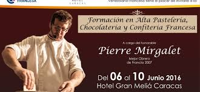

HISTORIA
LOS INICIOS
En mayo del año del 2001, Polleria sam abre las puertas de su primer local ubicado en Victor Andres Belaunde Nro 113 Pueblo Nuevo, en un espacio de 50 mts. cuadrados, 6 mesas , 4 trabajadores y muchas ilusiones.
Muy pronto el publico identifico el delicioso sabor Oriental, nuestra tortillas de 16 sabores, la variedad de nuestras cremas, la limpieza y la calidad de servicio , mostrando asi su preferencia hacia nosotros.
Posteriormente se realiza la ampliacion del primer local, innovado con luces de neon, personal completamente uniformado, novedosas gigantografias publicitarias, ambientes comodos y familiares. Desde entonces, mantiene su filosofia: Satisfacer plenamente a sus clientes, brindandoles exquisitos tortas, de primera calidad, ademas de cremas especiales.
HOY EN DIA
Debido a la gran aceptacion de nuestro producto, y gracias a la preferencia del publico contamos con tres locales mas estrategicamente ubicados Calle Jr. San Martin , pronto con la reapertura de primer local, totalmente renovado y todos se caracterizan por ofrecer a nuestros clientes EL MEJOR SABOR Y EL MEJOR SERVICIO!
|  |